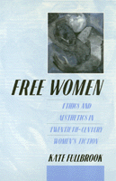

<body bgcolor="#FFFFFF" text="#000000" link="#0000FF" vlink="#CC0000" alink="#CC0000"><center><hr width="350" size="1" align="center" noshade>The ethical and aesthetic impulses that have shaped the fiction of prominent authors<hr width="350" size="1" align="center" noshade><p><a href="https://cdcshoppingcart.uchicago.edu/Cart/ChicagoBook.aspx?ISBN=9780877227731&&PRESS=temple" target="_top">Buy this book!</a> | <a href="https://cdcshoppingcart.uchicago.edu/Cart/Cart.aspx?PRESS=temple" target="_top">View Cart</a> | <a href="https://cdcshoppingcart.uchicago.edu/Cart/Cart.aspx?PRESS=temple" target="_top">Check Out</a></p><p></p></center><!--none//--><h1>Free Women</h1>
<H2>Ethics and Aesthetics in Twentieth-Century Women's Fiction</H2>
<h3>Kate Fullbrook</h3>
<P>cloth 0-87722-773-X $39.50, Oct 90, <FONT COLOR=#990033>Out of Stock Unavailable</FONT>
<br>paper 0-87722-774-8 $22.95, Oct 90, <FONT COLOR=#990033>Out of Stock Unavailable</FONT>
<BR> 192 pp
<BR>&nbsp;<br>Restricted: United States and its dependencies, the Philippine Islands, and Canada
</P><BLOCKQUOTE><I>"In her lucid and persuasive study, Kate Fullbrook shows bow women writers from Edith Wharton to Toni Morrison have used their fiction to help restructure our ethical landscape. Her book insists on the useful truth that feminism, with its moral centre, has still much to offer the late twentieth century."</I>
<br>&#151<b>Janet Todd</b>, University of East Anglia<I></I></BLOCKQUOTE>
<p>In this sensitive and incisive study of eleven major twentieth-century women novelists, Kate Fullbrook traces the ethical and aesthetic impulses that have shaped their fiction. The result is a profoundly important way of reading women writers in the light of a new ethics for women.
<p>This book captures the sweep of women’s literary achievement in the modern period and the impact of the radical new moral principles outlined in their fiction. The novelists included here are Edith Wharton, Willa Cather, Zora Neale Hurston, Gertrude Stein, Virginia Woolf, Dorothy Richardson, Djuna Barnes, Christina Stead, Doris Lessing, Margaret Atwood, and Toni Morrison. Fullbrook treats them not only as major literary figures in their own right but also as part of a tradition of women’s writing that has as its project nothing less than an attempt to shift the moral ideas of the modern world.
<BR>&nbsp;<h2>Reviews</h2>
<p><I>"This is an exciting, original, and informative study of twentieth-century women's fiction. It brings a vast amount of material together, yet manages never to lose or confuse the reader&#151always there is a clear line of argument. The approach is genuinely interdisciplinary in the best spirit of feminist inquiry and [Fullbrook's] readings are fresh and illuminating. Fullbrook's argument that these women writers restructure the ethical landscape by devising new patterns for measuring moral success or failure is persuasive. Her discussion of the way they rebuild from the philosophical rubble of relativism, the way they intervene at a moment of cultural disjunction to propose alternative futures, is convincing and important."</I>
<br>&#151<b>Gayle Green</b>, Scripps College
<BR>&nbsp;<h2>Contents</h2><P>
<p>Acknowledgments
<br>Introduction
<br>1. Edith Wharton: Sexuality, Money and Moral Choice
<br>2. Willa Cather and Zora Neale Hurston: Folktale, Parable and the Heroic Mode
<br>3. Gertrude Stein and Universal Sympathy
<br>4. Virginia Woolf: Beyond Duty
<br>5. Dorothy Richardson, Djuna Barnes, Christina Stead: Varieties of Modernism
<br>6. Doris Lessing: The Limits of Liberty
<br>7. Margaret Atwood: Colonisation and Responsibility
<br>8. Toni Morrison: Anatomies of Freedom
<br>Notes
<br>Select Bibliography
<br>Index
</P><BR>&nbsp;<H2>About the Author(s)</H2>
<P><b>Kate Fullbrook</b> is Principal Lecturer and head of Literary Studies at Bristol Polytechnic University, U.K.</P>
<BR><H2>Subject Categories</H2>
<p><A HREF="/tempress/women.html" TARGET="_top">Women's Studies</a>
<BR><A HREF="/tempress/literature.html" TARGET="_top">Literature and Drama</a>
</p>
<p align="center"><a href="https://cdcshoppingcart.uchicago.edu/Cart/ChicagoBook.aspx?ISBN=9780877227731&&PRESS=temple" target="_top">Buy this book!</a> | <a href="https://cdcshoppingcart.uchicago.edu/Cart/Cart.aspx?PRESS=temple" target="_top">View Cart</a> | <a href="https://cdcshoppingcart.uchicago.edu/Cart/Cart.aspx?PRESS=temple" target="_top">Check Out</a></p><p><font face="Arial" size="1"><a href="copyright.html" onMouseOver="window.status='Web Copyright Policy';return true;" onMouseOut="window.status=''" title="Web Copyright Policy">&copy;</a> 2015 <a href="http://www.temple.edu" target="new" onMouseOver="window.status='Link to Temple University home page';return true;" onMouseOut="window.status=''" title="Link to Temple University home page">Temple University</a>. All Rights Reserved. http://www.temple.edu/tempress/titles/823_reg.html</font></p>